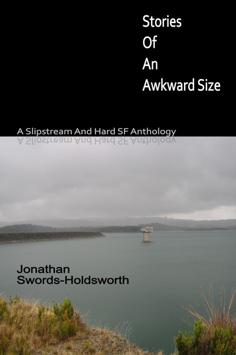

A few months ago we received an email from Jon Swords-Holdsworth, an author of "slipstream and hard science fiction" from Melbourne, Australia. He was finishing up a new volume of short stories, Stories of an Awkward Size and was seeking permission to mention Apache OpenOffice in the book's colophon. Since I know the topic of e-book production is of interest to many OpenOffice users, I asked Jon if he'd consent to an interview (via email) on this topic, to which he agreed. I certainly learned a lot from Jon about what is involved in using OpenOffice and other open source tools together to produce an e-book. I hope you do as well!

Rob: Hi Jon, I read a little bit, to get a feel for your writing. I couldn't put down "Black Prince" once I started.
Rob: A little about the book, before we get started on the technical side. You describe the book as "Slipstream and Hard Science Fiction". Even as a casual science fiction reader I've heard of hard science fiction before, but what is "slipstream"?
Jon: This bears some discussion. I am going to write a small piece on it up on my GoodReads blog, but I don't know when, so please take the below as my views. 'Slipstream' is a neologism and may be regarded as somewhat dubious, but it is getting used more and more. A number of authors identify themselves as Slipstream authors, and it is starting to appear as a genre/category on book listing sites.
I personally - and I'm not alone - see Roald Dahl as the grandfather of Slipstream, particularly with regard to his 'Tales Of The Unexpected' works. The 'unexpected', is most important in Slipstream.
Slipstream, at least as I see it, is the modern approach to the Mystery/Macabre genre. But, being modern, it has some important differences. It tries to be subtle, usually, and avoid things being 'epic'. No giant conspiracies, no huge space-faring or mine-dwelling empires, poised to take over the world or anything like that. Instead, it often concentrates on the everyday, and things becoming very strange, or out of place. Of course it can be backed-up by anything you like: science fiction, fantasy, deviant psychology, whatever you want.
In traditional, ye-olde, Mystery fiction, the mystery is all-important and the characters and atmosphere are fleshed out as a by-product, if indeed they get fleshed out at all. The same is true of older Detective or Thriller fiction.
With Slipstream, the entire package, taken holistically, is the genre. A strange atmosphere is brewed - and not necessarily a dread one! - as the story unfolds, and the story usually happens in the most mundane of settings.
An external example: the excellent film Nightcrawler, with Jake Gyllenhaal, is something I strongly regard as Slipstream. Though it is a thriller, it concerns itself purely with news crews trawling a city for events, and no further! Though it is a psychological character-study, it achieves all its aims by demonstration, not by dwelling or by inner monologues! And though it is just a series of events (which don't start to shock you until later in the piece), by the careful unfolding of those events it manages to have atmosphere you can cut with a knife.
Several people commented that my story 'Black Prince' is, strictly speaking, a Slipstream tale, even though it is rooted in hard-SF. I'd like to think that is not only true, but true of all my stories, and hence the sub-title of my book.
Rob: Is this your first published book?
Jon: It is indeed.
Rob: OK. Let's get into the nitty-gritty details of what tools you used for creating the book. First, what OS do you work with?
Jon: Ubuntu. I started off on an ancient 11.04 install, but eventually it couldn't support the late versions of applications that I needed. I therefore decided to upgrade to 14.4.02 LTS (Long Term Support). Unless you are a dabbler, I would recommend only using LTS versions of Ubuntu.
Rob: Did you start off your work in Apache OpenOffice, or did you use something else for research notes, idea sketching, outlining, etc?
Jon: I use KWrite for taking notes, and keeping notes about stories. But eventually everything lands on the launchpad of Apache OpenOffice (Writer).
Rob: Did you use the default named styles in OpenOffice or did you modify them?
Jon: Unfortunately, the default named styles in OpenOffice weren't of any use. I had to make my own templates with my own styles.
Rob: What kind of modifications did you make and why?
Jon: The reason for this is that manuscript-publication has very strict requirements, and there is almost no leeway: they must conform or else!
What I did was take some MSWord Templates published (unconditionally) by Amazon CreateSpace, and transform them to OpenOffice Templates. This took a lot of experimentation.
Along the way I settled on the 6" x 9" page-size, or "Trim", as all publishers recommend it as being the most flexible. You can get from a 6"x9" Trim to almost any other format quite easily, and many processes and printers out there in the world are already set up for it.
My OpenOffice template for 6"x9" Trim, for use on CreateSpace (it could be used for any publisher, really) is freely available (with no restrictions) at: http://jonswordsholdsworth.com/templates/openoffice/
All the styles in that template that have names that begin with "CSP - " are the ones to use.
DISCLAIMER: if it doesn't work for you or does something bad - so sorry but it's not my responsibility - it's your responsibility, for downloading it!
I'll put some detailed instructions up at some point, but basically if (in Page Styles) you set the first page to "CSP - Chapter Verso", then start typing on the second page, it all starts to become obvious.
You need to read up on and understand the page concepts of Verso and Recto - this is very important, particularly in paper versions of a book.
I have several Page styles defined in my template (as opposed to Paragraph styles, which my template also defines). Verso should always be blank, with no content in it, and your First Page should start a chapter.
There is too much detail to describe here, but if you read up on the necessary styles required in a book - particularly a work of fiction - it will all start to make sense. Then you can look in my OTT template and you'll see where I have defined the appropriate styles for you to use. You are, of course, free to modify them in any way you like. But do bear in mind that you still need to conform to CreateSpace's requirements (in this case for a book in 6"x9" Trim), which the Page styles are particularly relevant to, and you will still need the Paragraph styles looking good for eBook publication.
Note one other thing: I live in Australia and abhor Imperial units of measurement, but unfortunately the world of printing and publishing is still firmly using them. You need to set OpenOffice - at least Writer - to use inches for everything. It will save you much pain!
Rob: While working on the book did you come across any features in OpenOffice that were new to you and which made your work easier?
Jon: The ability to have, and edit, per-document dictionaries was very useful! And the fact you can have them in parallel with the standard dictionary.
Another thing was OpenOffice's memory management, it's rather good.
I edited this book as individual chapters, initially - I highly recommend doing this, even if you are writing a Novel. Keeping the chapters separate gives you a lot more flexibility.
However, when it came time to merge them - something I was dreading - it actually went very smoothly. The Page Styles adapted more or less automatically, and where they needed some nudging they obligingly nudged. But most importantly of all the program itself effortlessly handled a 322 page document.
I've heard that most commercial word-processors (OpenOffice Writer is regarded as closer to a true DTP system), really struggle with large documents.
Also I made use of two external tools:
LanguageTool -- This tool has a few issues, and either the Java engine or the search-base or both, make it very slow. It's a case of set it doing something, walk away, come back, set it on the next thing, rinse repeat.
Nevertheless, it spotted the odd thing here and there made it 'pay' for itself (it's a free tool!) - things I wouldn't have seen. In the absence of human proof-readers (well, I only have a limited population of them, and as they are unpaid they tire of the work quickly - fair enough too!) tools like this are priceless, provided they work.
Writer2xhtml -- Another free tool, part of the Writer2latex suite. I used its Writer2epub sub-tool. Suffice it to say, the eBook would not have happened without this tool.
Rob: What features do you wish OpenOffice had that would have made your work easier?
Jon: A built-in grammar checker that was fast would be lovely. Also I don't like the Navigator tool. Actually, that's not entirely true. It's a very useful tool indeed, but some of its features should be one key-combination away. Eg. if I type ctrl-G I want a 'Go To Page' window to come up! Otherwise, OpenOffice Writer is quite a nice environment to write a book in.
Rob: I understand you did the hard copy of the book first. What did the pipeline for that look like? ODT->PDF?
Jon: OpenOffice Writer, and then use the internal Export To PDF function. Despite some naysayers out there on the web, the internal PDF exporter works fine and produces a beautiful PDF that perfectly mirrors the ODT. Just make sure you have your Author details set in the Settings of OpenOffice (it's a general setting), and make sure the document has a Title set - these are used by the exporter to build the PDF's own metadata.
Rob: For the e-book edition, what formats did you target?
Jon: There are only two - EPUB (all eReaders except proprietary ones), and MOBI (Amazon Kindle. This format is being replaced by KF8 and AZW, but like all proprietary formats it has inevitably started running into marketplace and technical issues).
Rob: What did the pipe-line look like for conversion to e-book?
Jon: I was able to use FOSS software all the way up to and including EPUB.
For MOBI I had to use a different machine (running the 'dreaded 8') and Amazon's own closed-source 'Kindle Previewer' tool (important note: 'Kindle Previewer' is a different tool to 'Kindle For PC' - this tripped a lot of people up). But that tool did an excellent conversion.
To get to EPUB from ODT I used the Writer2epub tool, mentioned above. The EPUB that it produces is nearly perfect, but I still had to do a few tweaks to it - the full details are out of scope for this interview, but I promise I will put them up on my blog. The tool I used for tweaking the EPUB was Sigil, which is an excellent tool.
EPUB is basically an on-disc website, in a particular directory-hierarchy, wrapped up in a ZIP file. So to edit one you need to be familiar with XHTML and CSS Styles. That's a big ask for a lot of authors! I am lucky in that I have a deep software-development background, including a good chunk of website building, so I knew what I was doing. For anyone else, I have to say the forums are the place to look.
Side note: Forget about Calibre. Calibre is an excellent eBook library tool, but it's EPUB editor is an added-on afterthought. It can't do the job. Sigil, on the other hand, is a dedicated EPUB editor and makes things very easy.
Big note - and apparently ALL word-processors that use XML based formats suffer from this: extraneous <span> elements in the text.
If you look at the XHTML that is produced by exporting your ODT to EPUB, you will notice something odd. All through the text, you will find blocks of text that are wrapped in <span> tags, and these <span> tags usually have their own font-definitions and other style information. They can also be nested inside one another.
Nobody know what causes these! And all XML-format word-processors have this issue! It's not unique to OpenOffice Writer.
When you are looking at, and editing, your ODT in Writer, these <span>s are not a problem - because inside Writer it uses absolute font-sizes.
However, to create a proper EPUB, you need to export with relative font-sizes. This means that <span>s that are nested inside one another, each with different font-size information, will start doubling-up or tripling-up font-sizes! For example, an outer <span> specifies a font-size of 83% (a relative font-size). Nested inside that <span> somewhere is another <span> and it too specifies a font-size of 83%. That inner span, will actually have a font-size that is 83% of 83%, or about 70%. This causes the font-size to wander up and down, all over the document.
It's also subtle. I was looking at an export of my EPUB onto a Kobo Glo, and couldn't work out why some of the pages looked terrible. It was difficult to put my finger on. Eventually, by a lot of visual comparison, I realised that the font-size was jumping randomly all over the page.
To fix it, you need to come to grips with regex expressions and how to use them in Sigil (or your EPUB editor of choice). Sigil's regex support is rather good. These allow you to globally search-and-replace these annoying <span>s, or at least their style information. After doing this my EPUB was perfect (or as close to as I could see, anyway).
Rob: What did you use for designing your book cover?
Jon: I used Inkscape to do the layout, blocking and writing, and I used The Gimp to process the photograph.
The final export to PNG, at 300 DPI, was from Inkscape.
I would advise that if you are going for PoD - Print on Demand - ie. paperback, as I did first, then be careful with cover-art. Smooth things. Up the chroma, and up the contrast. Even to the point where it starts to look a little 'cartoony'.
The reason is that PoD processes, whilst they are 'good', are not 'great', and suck a lot of the life out of complex pictures and make them look a little grainy too. If the input image already has vibrancy to spare, it will survive better.
Another thing - temporarily reduce it to the size of a postage stamp and look at it. This is how it will look on Amazon's book listings and other publishers' book listings. Think about how you want it to stand out (or blend in, depending on how you operate).
Rob: Any other tips for readers of our blog who might want to start writing their own e-book with OpenOffice?
Jon:
- Ignore the naysayers, OpenOffice is one of the best environments around for writing professionally. I have not tried the 'Scribus' program, but as far as I can tell it and OpenOffice Writer are the only games in town, unless you want to spend a lot of money.
- Strongly recommend either use my template, or one from some other author you trust - or by the time we finish speaking it is possible that CreateSpace has got with the times and started publishing OpenOffice Templates to use with their site.
- Get to understand Styles properly! You need to be using Styles, and that's why I recommend getting a template which has useful ones already built-in. It is painful going back and trying to fix a document that was created without using Styles (e.g. indents were done with tabs, titles are hand-bolded and have arbitrary definitions, etc). It is not hard to understand Styles - it is often made out to be a complex, mystical process, but really they are quite simple things and quite easy to get to grips with.
- Make sure your OS is up to date: trying to get older versions of apps to do things is not recommended, and they often won’t install under older environments.
- Make sure your OpenOffice environment is configured:
- Set the date, your author name, set the units to Imperial and inches (yes, yes, I know), set the directory where it is picking up Templates from.
- SET YOUR OS'S JAVA RUNTIME UP PROPERLY!
- Make sure you set your dictionary and other languages to your native language (e.g. everything on mine is English(AU)).
- Turn Smart Quotes ON! This is very important - your conversations in your documents should have proper opening and closing quotes, not 'straight' quotes unless there is a requirement that they be so.
Jon: Stories Of an Awkward Size (A Slipstream and Hard-SF Anthology) is currently available on Amazon, as Paperback and Kindle (It will also be available on iBook and other places, though currently I can't put a firm date on when.)